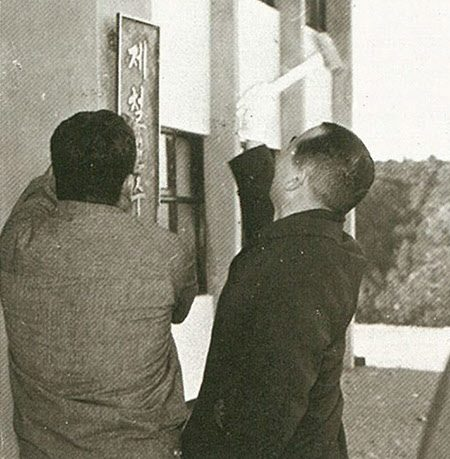
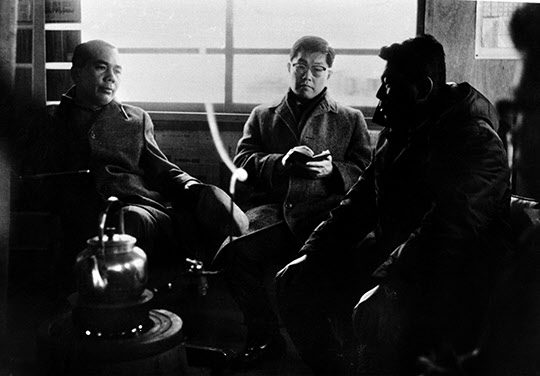

연재일 2014-11-26출처 조선일보 프리미엄조선 연재
해가 바뀌었다. 1969년 새해. ‘해를 맞이하는 만’이라는 뜻의 영일만(迎日灣), 그 수평선 위로 쇳물 빛깔의 붉은 해가 힘차게 솟아올랐다. 포항종합제철 고로에서 그 태양 빛깔의 쇳물이 쏟아져 나오고 그 쇳물이 한국산업화의 일출과 같은 역할을 해주는 날이 기어코 오긴 올 것인가? 이렇게 박태준의 새해 해맞이는 착잡했다.
새해에도 차관 조달은 캄캄했다. 먹구름만 잔뜩 끼고 있다는 예측이 흉흉한 소문처럼 들려오고 있었다. 차관 조달도 못해주는 KISA가 주제넘게도 한국정부에다 종합제철 공장 운영에 관해 초기 몇 년 동안은 외국 전문기술단과 운영계약을 맺고 공장관리와 직원교육을 맡기라고 요구했다. 그러나 박태준은 콧방귀를 뀌었다. 무엇보다도 그것이 초래할 ‘장기적 기술식민(技術植民)’의 상태를 주목하고 아예 다른 길로 나갔다. 스스로 짜놓은 희망의 시간표에 따라 과감히 ‘포철 사원의 해외 기술연수 프로그램’을 가동하는 것이다.
제철연수원에 현판을 달고 있는 박태준 사장.
박태준은 기술력 축적에 대한 단기목표와 장기목표를 설정했다. 단기목표는 첫 가동 단계부터 우리 손으로 공장을 직접 돌릴 수 있게 하는 것. 이를 실현하기 위한 지름길은 사원들이 몸소 선진적 제철기술을 습득하는 일이었다.
1968년 10월 24일 경영자금이 부족하고 차관 조달이 막혀 있어도 ‘연수원’부터 착공했던(이듬해 1월 15일 완공) 박태준은 회사 장래에 교육이 지극히 중요하다는 확신 위에서 그해 11월에 직원 9명을 1개월 간 가와사키제철소로 연수를 보내며 ‘해외 기술연수’의 막을 올렸다. 곧이어 6명이 3개월 간 후지제철소로 떠난다. 1969년 4월에는 14명이 뒤따른다. 이렇게 일본, 호주, 서독 등에 다녀온 포스코 창업기의 기술연수생은 포항 1기 공사가 마무리에 접어드는 1972년까지 600명에 이르고, 그 비용도 500만 달러나 든다.
박태준은 해외 기술연수를 떠나는 사원들에게 늘 강조하고 당부했다.
“여러분은 연수기간 동안 무슨 수를 써서든 철강기술에 대해 하나도 빼놓지 말고 모두 배워 와야 합니다. 포철을 키워줄 기술들을 머릿속에 듬뿍 담아 오시오.”
‘무슨 수’는 기술력 무(無)에서 출발하는 포스코의 절박한 현실을 담고 있었다. 실제로 ‘계약조건에 나오는 교과목이나 일정표에 얽매지 말고 맨투맨 작전으로 상대방의 기술을 근원부터 배워 오라’는 회사 방침이 연수생들에게 하달되었고, 연수생들은 내남없이 과외시간도 아끼지 않고 자료수집에 부지런을 떨었다. 그래서 그 시절의 해외연수엔 숱한 일화들이 생겨난다.
안 보여 주려는 도면을 한 번이라도 보려고 상대를 술자리로 유인하고, 보여주지 않는 공장 내부를 보려고 기지를 발휘해 기어이 들어가고…. 그들은 이 눈치 저 눈치 살피며 잔머리도 열심히 굴리느라 조마조미한 긴장도 자주 맛보았을 것이다.
그렇게 고생해서 수집해온 자료들을 박태준은 귀하게 다루었다. 다음과 같은 지시를 내렸던 것이다.
“모든 연수 자료는 마이크로필름화(化)하여 전사원이 유효한 기술지식으로 활용할 수 있도록 하라.”
최고경영자의 명확한 판단과 과감한 투자, 직원들의 투철한 사명과 근면한 자세. 이를 바탕으로 1970년 4월 1일 포항제철소 1기 착공식을 거행할 때 포스코 임직원들은 ‘첫 조업부터 우리 손으로 가동하자’라는 박태준의 포부를 명백한 목표의식과 도전의식으로 품게 된다.
롬멜하우스 난로가에 앉아 있는 박태준 사장, 안병화 부장, 박종태 소장.
박태준의 기술력 축적에 대한 장기목표는 세계 최고 기술력 확보였다. 그거야말로 결코 몇 년 사이에 이룩할 수 없는 일이었다. 기술력 개발을 위한 부단한 투자, 경험축적, 정보화와 과학화…. 그 원대한 목표는 창업으로부터 15년쯤 지난 뒤 광양제철소에 집대성되고, 1992년 파이넥스 공법의 상용화 연구에 도전하는 것으로 거듭나며, 마침내 포스코는 2007년 5월 세계 최초로 파이넥스 공법의 150만 톤 용광로에서 쇳물을 뽑아내는 쾌거를 기록한다.
1968년 11월 박정희가 영일만 롬멜하우스에서 쓰라린 속을 자신도 모르게 쓸쓸히 드러냈던 그 탄식과 그 독백은 차관 조달의 비원(悲願)에 가까운 기다림일 뿐이지, 그것을 끌어올 힘은 아니었다. 그때 한국이라는 가난한 분단국가의 능력이 딱 그러한 수준이었다.
1969년 벽두가 쏜살같이 지나가 1월 하순에 접어들었다. 박태준은 기다림에 지치고 있었다. 이제는 결판을 내야 한다고 판단했다. 그는 청와대로 올라가서 박정희와 만났다.
“이대로 앉아서 기다릴 수만은 없습니다. 피츠버그로 가서 직접 포이를 만나보겠습니다.”
“그래. 그놈들 속을 들여다봐.”
“정문도와 포철에서 두 사람을 데려갈 생각입니다.”
고개를 끄덕이는 박정희의 표정은 어두운 편이었다. 그럴 만했다. KISA의 5개국 가운데 영국, 프랑스, 이탈리아는 할당 받은 차관을 제공하겠다고 약속했다. 그러나 미국과 서독이 난색을 표명하고 있었다. 미국의 태도 변화에는 코퍼스사의 장삿속이 포항제철에 통하지 않는 것이나 원자력발전소 건설에서 더 큰 이윤이 생길 것이라는 자본주의적 판단도 작용한 결과였지만, 서독의 태도 변화에는 ‘민주주의와 인권 문제’가 개입돼 있었다.
박정희 정권 출범기에는 한국경제에 대해 어느 나라보다 우호적이고 협력적이었던 서독이 태도를 바꿔서 냉랭히 나오는 데는 1967년 7월 중앙정보부가 ‘동백림(동독의 수도 베를린)’을 거점으로 대규모 간첩조직이 암약했다고 발표한, 윤이상이라는 음악가를 놓고 요새도 가끔 ‘평양의 지령을 받는 사람이었다’라는 시끄러운 시비가 나오게 만드는 이른바 ‘동백림 사건’에 대한 유감과 항의의 뜻도 담고 있었다. 동백림 사건의 재판이 1969년 3월에 종결되고 이듬해 광복절에 가서야 여러 가지 깊은 상처들을 남긴 채 ‘법률적’으로만 해소되니….
서독과 미국의 쌀쌀맞은 태도에 실망하는 박정희가 박태준을 위로하듯 말했다.
“서독과 미국을 대체할 차관 제공선을 구라파에서 더 찾아보라고 지시해놨고, 조만간 경제부총리가 KISA 회원 국가들에게 종합제철 차관을 최우선적으로 제공하라는 독촉장을 보낼 거야.”
박정희의 말은 실행된다. 2월 3일 경제기획원장관 명의로 KISA 회원국의 주한 대사관을 통해 한국의 종합제철 건설에 소요되는 차관을 최우선 제공하라고 촉구하는 공한을 보낸 것이다. 하지만 유럽에서 서독과 미국을 대체할 다른 차관선을 구하기란 난망한 일이었다.
“포이 영감을 성의껏 설득해 보겠습니다.”
“해봐야지. 해내야지.”
“워싱턴까지 갔다 오자면 시일이 제법 걸릴 겁니다.”
박정희에게 ‘최선의 KISA 설득’을 약속한 뒤 회사로 돌아온 박태준은 황경로 기획관리부장만 따로 불렀다. 그리고 누구도 모르게 무시무시한 특명을 내렸다.
“회사 청산 절차를 준비해 놓으시오.”
황경로는 되묻지 않았다. 어떤 토를 달지도 않았다. 비장한 결심이구나. 이 느낌만 가슴으로 받았다.

